Home / Past papers / MLT Quiz 2 / this paper
Machine Learning Techniques 06 Apr 26 - 12 Apr 2026
Elapsed 00:00
Consider a linear regression model applied to a dataset in which each data-point is described by two features. The first feature is always  . The
. The  data-point's feature-label pair is represented as
data-point's feature-label pair is represented as  . Let
. Let  be the optimal weight vector that minimizes the sum of squared errors. Consider two scenarios:
be the optimal weight vector that minimizes the sum of squared errors. Consider two scenarios:  :
:  , for each data-point .
, for each data-point .  :
:  , for each data-point . Which of the following is true?
, for each data-point . Which of the following is true?
. The data-point's feature-label pair is represented as . Let be the optimal weight vector that minimizes the sum of squared errors. Consider two scenarios: : , for each data-point . : , for each data-point . Which of the following is true? is possible, but
is possible, but  is impossible.
is impossible.- is impossible, but is possible.
- One of or is possible.
- Both and are impossible.
In Ridge Regression, the optimal weight vector is given by  . The regularization parameter
. The regularization parameter  is determined using 5-fold cross-validation. The following table summarizes the average Training Error and Validation Error (Mean Squared Error) obtained for various values of :
is determined using 5-fold cross-validation. The following table summarizes the average Training Error and Validation Error (Mean Squared Error) obtained for various values of :
 Based on the cross-validation results provided, what is the most appropriate choice for ?
Based on the cross-validation results provided, what is the most appropriate choice for ?
. The regularization parameter is determined using 5-fold cross-validation. The following table summarizes the average Training Error and Validation Error (Mean Squared Error) obtained for various values of :
Based on the cross-validation results provided, what is the most appropriate choice for ?- 0.001
- 0.1
- 1.0
- 10.0
- 100
Consider a training dataset
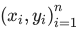
where all input points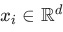
are distinct. Which of the following models is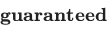
to achieve a training error of zero?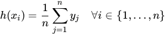
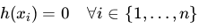
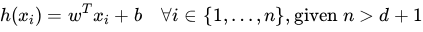
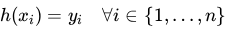
Consider the following classification models and their geometric properties:
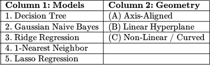
Select the correct many-to-one matching: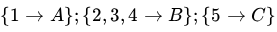
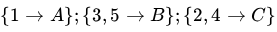
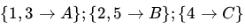
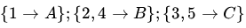
Consider a training dataset for a classification problem with four data-points. Red circles represent data-points with label  and green squares represent data-points with label
and green squares represent data-points with label  . A test-point is located at
. A test-point is located at  are drawn for your convenience.
is added somewhere inside the outermost circle of radius such that it leaves the predicted label of the test data-point unchanged. Let
are drawn for your convenience.
is added somewhere inside the outermost circle of radius such that it leaves the predicted label of the test data-point unchanged. Let
and green squares represent data-points with label . A test-point is located at 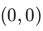
. Dotted circles centered at with radii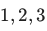
and are drawn for your convenience.
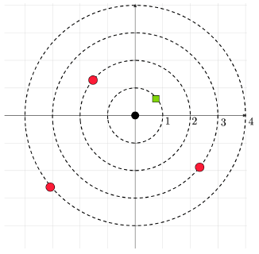
KNN with Euclidean distance and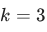
is the classifier. Now, a new training data-point with label is added somewhere inside the outermost circle of radius such that it leaves the predicted label of the test data-point unchanged. Let 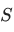
be the set of all points that could be the potential location of this new training data-point. Find the area of the region corresponding to .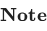
: We use KNN with for both datasets.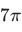
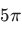
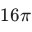
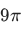
A dataset is said to be while the green squares represent data-points with label . The sizes of the squares and circles are blown up for clarity; the data-point sits at the center of the square/circle. : The options are independent of each other. We are not looking for a single classifier that will work for multiple options.
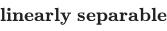
if we can find a linear classifier that achieves zero error for that dataset. Select all linearly separable datasets. The red circles represent data-points with label while the green squares represent data-points with label . The sizes of the squares and circles are blown up for clarity; the data-point sits at the center of the square/circle. : The options are independent of each other. We are not looking for a single classifier that will work for multiple options.
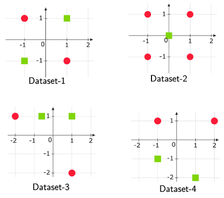
- Dataset-1
- Dataset-2
- Dataset-3
- Dataset-4
A researcher is modeling a dataset using linear regression of the form  . They are considering two different probabilistic assumptions for the independent and identically distributed (i.i.d.) noise term
. They are considering two different probabilistic assumptions for the independent and identically distributed (i.i.d.) noise term  : • Assumption A: The noise follows a Gaussian distribution,
: • Assumption A: The noise follows a Gaussian distribution,  . • Assumption B: The noise follows a Laplace distribution,
. • Assumption B: The noise follows a Laplace distribution,  . The training dataset is known to contain several extreme outliers resulting from sensor malfunctions. Which of the following statements correctly describes the behavior of the Maximum Likelihood Estimation (MLE) for the parameter vector
. The training dataset is known to contain several extreme outliers resulting from sensor malfunctions. Which of the following statements correctly describes the behavior of the Maximum Likelihood Estimation (MLE) for the parameter vector  ?
?
. They are considering two different probabilistic assumptions for the independent and identically distributed (i.i.d.) noise term : • Assumption A: The noise follows a Gaussian distribution, . • Assumption B: The noise follows a Laplace distribution, . The training dataset is known to contain several extreme outliers resulting from sensor malfunctions. Which of the following statements correctly describes the behavior of the Maximum Likelihood Estimation (MLE) for the parameter vector ?- Under Assumption A, the MLE is equivalent to minimizing Mean Squared Error (MSE), which is highly sensitive to outliers because the penalty grows quadratically.
- Under Assumption B, the MLE is equivalent to L1 regularization, which is more robust to outliers because the penalty for large residuals grows linearly.
- Both Assumption A and Assumption B lead to the same optimal parameter vector
 regardless of the presence of outliers.
regardless of the presence of outliers. - All the given options are correct
Comprehension passage - the questions below it refer to this
Consider a node in a decision tree that has 5 data-points. The data-point is represented by a feature-label pair  , where
, where 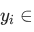
{ , }.
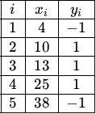
Consider the split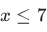
at the parent node resulting in left and right child nodes. The left child node has all data points for which is true. Entropy is used to determine the purity of the nodes.Recall that the formula for the entropy of a node is: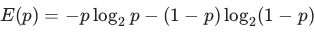
where is the fraction of positive data-points in the node. Use at least three digits after the decimal point in all intermediate calculations. Based on the above data, answer the given subquestions.
is the fraction of positive data-points in the node. Use at least three digits after the decimal point in all intermediate calculations. Based on the above data, answer the given subquestions.Find the entropy of the parent node. Enter your answer correct to two decimal places.
Find the entropy of the right child. Enter your answer correct to two decimal places.
Find the information gain. Enter your answer correct to two decimal places.
Comprehension passage - the questions below it refer to this
You are provided with a training set of 5 observations, each consisting of four binary features  and a binary target label
and a binary target label  .
.
 . Based on the above data, answer the given subquestions.
. Based on the above data, answer the given subquestions.Using the Naive Bayes assumption and the data provided, calculate the joint probability  for a new test instance
for a new test instance  . Enter your answer correct to two decimal places.
. Enter your answer correct to two decimal places.
for a new test instance . Enter your answer correct to two decimal places.To address zero-probability estimates using Laplace smoothing, the dataset is augmented with synthetic observations. Specifically, add the following two samples to the original table: 1. One sample in which all features ( (X1, X2, X3, X4) ) take the value 1 and the class label is Y = 1. 2. One sample in which all features ( (X1, X2, X3, X4) ) take the value 1 and the class label is Y = 0. Based on this new augmented dataset of 7 samples, calculate the updated conditional probability
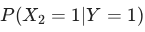
.For the Naive Bayes model described in the main data with  binary features and a binary class label, how many independent parameters are required to fully specify the model? Answer for the original dataset with 5 training examples.
binary features and a binary class label, how many independent parameters are required to fully specify the model? Answer for the original dataset with 5 training examples.
binary features and a binary class label, how many independent parameters are required to fully specify the model? Answer for the original dataset with 5 training examples.- 5
- 8
- 9
- 10
Let the linear regression model's solution be written as  , where
, where  . Let
. Let  be a valid kernel function. What will be the prediction for an unseen data point
be a valid kernel function. What will be the prediction for an unseen data point  ?
?
, where . Let be a valid kernel function. What will be the prediction for an unseen data point ?


Perform a 3-NN regressor for the following dataset:
 where,
where,  is a feature vector and
is a feature vector and  is the label. What will be the predicted value for the test data point
is the label. What will be the predicted value for the test data point  ? ___________ Enter the answer correct to one decimal place.
? ___________ Enter the answer correct to one decimal place.
where, is a feature vector and is the label. What will be the predicted value for the test data point ? ___________ Enter the answer correct to one decimal place.Answer key
- Q1 (MCQ, 3 marks): D
- Q2 (MCQ, 3 marks): C
- Q3 (MCQ, 3 marks): D
- Q4 (MCQ, 3 marks): B
- Q5 (MCQ, 3 marks): A
- Q6 (MSQ, 3 marks): C, D
- Q7 (MSQ, 3 marks): A, B
- Q8 (SA, 2 marks): 0.87 to 1.07
- Q9 (SA, 2 marks): 0.71 to 0.91
- Q10 (SA, 2 marks): 0.22 to 0.42
- Q11 (SA, 3 marks): 0.15 to 0.21
- Q12 (SA, 3 marks): 0.5
- Q13 (MCQ, 2 marks): C
- Q14 (MCQ, 2 marks): C
- Q15 (SA, 3 marks): 4.5